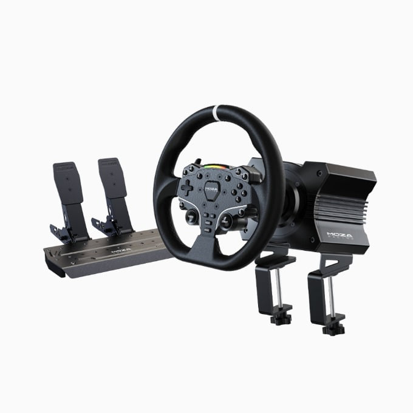
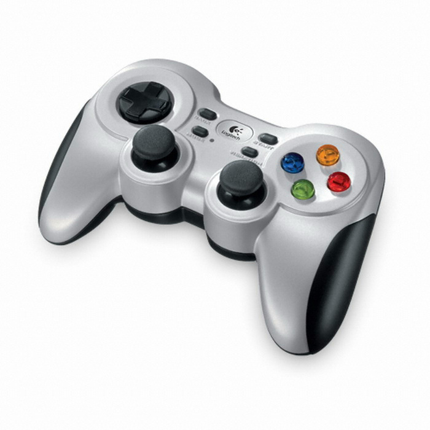
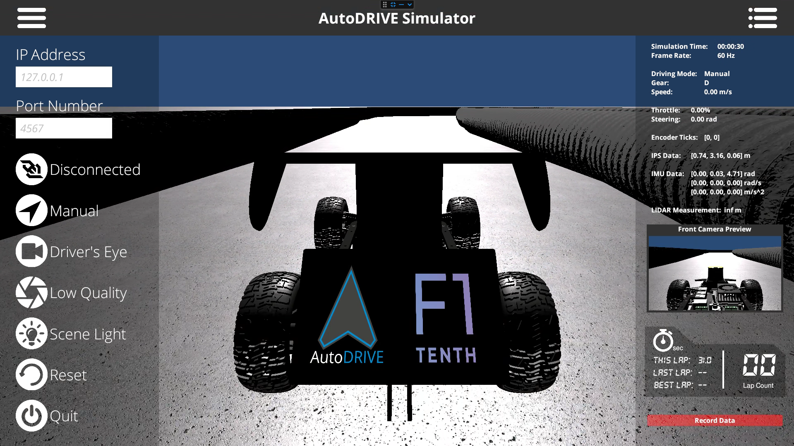

Simulation & PP Expert
Compare manual driving and PP reference driving in the same simulator.같은 시뮬레이터에서 사람의 수동 주행과 PP의 기준 주행을 비교합니다.
1. Simulation Foundation
Manual and autonomous-reference driving share the same AutoDRIVE simulation, built on Unity. The autonomous component supports the wider AI Coaching research goal.[2][3][5]Unity 기반 AutoDRIVE 안에서 수동 주행과 자율 기준 주행을 비교합니다. 자율주행 기능은 AI Coaching 연구에 필요한 기준을 마련하기 위한 것입니다.[2][3][5]
Manual Driving
The driver chooses steering and acceleration/braking through a racing wheel with pedals or a joystick/gamepad.레이싱 휠·페달 또는 조이스틱으로 조향과 가속·제동을 직접 조작합니다.
Autonomous Reference
The implemented autonomous controller uses Pure Pursuit path tracking (PP). It provides a reproducible expert reference for future AI Coaching; autonomy is a supporting component, not the final research goal.현재 자율주행에는 Pure Pursuit 경로 추종 방식(이하 PP)을 사용합니다. 향후 AI Coaching에 필요한 전문가 기준을 마련하기 위한 구성 요소이며, 자율주행 자체만을 최종 목표로 삼지는 않습니다.


Driving Limits & Collision Response
| Item | Current configuration |
|---|---|
| Speed | The wheel profile uses a 1 m/s cruise target and accelerator input up to 3 m/s. Braking can bring the target to zero. Actual speed is the vehicle response, not the target itself.레이싱 휠 설정에서는 기본 목표속도 1 m/s에서 가속 페달로 최대 3 m/s까지 높입니다. 제동하면 정지할 수 있습니다. 실제 속도는 차량의 반응이므로 목표속도와 다를 수 있습니다. |
| Steering | Normalized command: −1 to +1. The current PP/vehicle configuration uses a 30° (about 0.524 rad) limit in either direction; this is the vehicle steering range, not steering-wheel rotation.조향 명령은 −1~+1로 정규화합니다. 현재 PP·차량 설정의 조향 한계는 좌우 각각 30°(약 0.524 rad)입니다. 레이싱 휠의 회전 범위가 아니라 차량의 조향 범위입니다. |
| Collision | A new collision during active control latches a stop: throttle/steering commands remain zero. Check the situation, release mode selection, then explicitly reselect one mode. This does not automatically reset the vehicle or resume a session.주행 중 새 충돌이 감지되면 정지 상태를 유지하며 스로틀·조향 명령을 0으로 보냅니다. 상황을 확인하고 모드 선택을 해제한 뒤, 한 가지 모드를 다시 선택해야 합니다. 차량 초기화나 세션 재시작이 자동으로 되는 것은 아닙니다. |
Limits and recovery behavior are configuration-specific; these descriptions follow the current research setup.[5]위 수치와 복구 동작은 현재 연구용 설정을 기준으로 설명했습니다.[5]
2. Pure Pursuit Reference
Pure Pursuit steers toward a look-ahead point on a reference path. This project combines that steering method with speed planning in the PP Expert controller.Pure Pursuit는 기준 경로의 전방 목표점을 향해 조향하는 경로 추종 방식입니다. 본 프로젝트의 PP Expert는 이 조향 방식에 속도 계획을 결합해 비교용 기준값을 제공합니다.
The configured reference speed range is 1–3 m/s, with a 3 m/s ceiling; actual speed depends on vehicle dynamics and control.[4][5]기준 속도 범위는 1~3 m/s, 상한은 3 m/s이며 실제 속도는 차량 동역학과 제어의 영향을 받습니다.[4][5]
3. Reference Path & Track View
Track identity and reference-path versions matter when comparing recordings. New straight-heavy and curve-heavy maps are planned for broader data collection; the current demonstrations do not establish transfer across tracks.기록을 비교할 때 같은 트랙과 기준 경로 버전인지 확인해야 합니다. 직선 중심·커브 중심 맵을 추가해 데이터를 확장할 예정이며, 현재 시연만으로 트랙 간 일반화가 입증된 것은 아닙니다.
4. Simulator Side Panels

Left · Connection & View
IP/port and connection state identify the external control link. The mode, camera, graphics-quality and lighting controls adjust operation and visibility. Reset returns the simulation to its initial state; Quit closes the simulator.IP·포트와 연결 상태로 외부 제어 연결을 확인합니다. 주행 모드, 카메라 시점, 그래픽 품질, 조명 옵션으로 동작과 시야를 조정합니다. Reset은 시뮬레이션을 초기화하고 Quit은 종료합니다.
Right · Vehicle & Sensors
Time, frame rate, driving mode, gear, speed, throttle and steering expose the current simulated state. Position, IMU/LiDAR readouts and camera preview help inspect the scene and sensor behavior.시간·프레임률·주행 모드·기어·속도·스로틀·조향으로 시뮬레이션 상태를 확인합니다. 위치, IMU·LiDAR 표시와 카메라 미리보기는 환경과 센서 동작을 확인하는 데 사용합니다.
Lap/collision readouts provide immediate feedback. The built-in Record Data control belongs to the simulator interface; the project’s canonical experiment logs are managed through Experiment Session. Sensor values visible here do not imply that every raw sensor stream is stored in those logs.랩·충돌 표시는 주행 결과를 바로 확인하는 용도입니다. 기본 화면의 Record Data와 본 프로젝트의 Experiment Session 기록은 구분합니다. 연구용 세션은 Experiment Session에서 관리하며, 기본 화면에 센서가 보인다고 모든 원본 센서 데이터가 세션에 저장되는 것은 아닙니다.